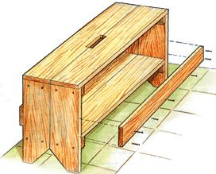
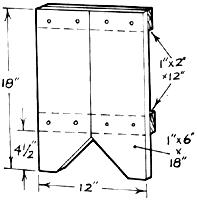
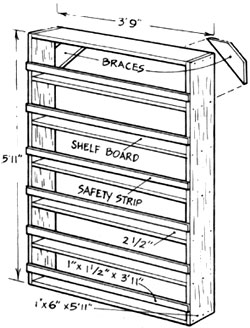

Summer Projects
A dependable wood bench and shelves that can be built in a couple of hours.
Here are two quick-to build woodworking projects that will come in especially hand, this time of year. The portable workbench is great to use as a toot holder and seat for easy, no-kneel, low-level gardening such as weeding or harvesting bush beans. And the canning shelves will hold sparkling jars of your garden's bounty.
Whether you are a contractor who builds everyday or a banker who fixes around the house on weekends, the portable, easy-to-build tool bench will allow you to tote everything you need for a task, while providing a perfect seat.
Material
A light, durable wood like pine or poplar should be used for constructing the bench. You may already have scrap from another project suitable for this one, but if you don't, you will have to purchase only two boards-one 1" x 6" x 14' board and one 1" x 4" x 6' board; 1 1/4" drywall screws are ideal for holding the bench together; a half-pound will be adequate for the job. Any building supply will be able to furnish you these materials.
If you are not familiar with buying lumber there is a fact you need to know. Planed (dressed) lumber will be slightly smaller than the measurements it is listed as and unplaned (rough) lumber will run slightly larger. For instance, a 1" x 6" dressed board will actually measure about Y" x 5Y4". For this project, that slight difference will not matter. Simply follow the directions provided here and the tool bench will turn out correctly.
Cutting
On the 1" x 6" x 14' board, using a square, mark two 24" lengths, two 22" lengths, and four 18" lengths. On the 1" x 4" x 6' board, mark two 24" lengths and two 12" lengths. Cut out these lengths.
One corner of each 1" x 6" x 18" board needs to be cut off at a diagonal to create the legs for the bottom of the bench. Choose a corner, measure along one edge 4", make a mark, and then measure 4" from that same corner along the other edge and make a mark. Use a straight edge to draw a line connecting these two marks and then cut along this line, removing the corner from the board.
The top of the bench will have a hole cut into it as a carrying handle. Along one side of each of the two 1" x 6" x 24"s make a mark in the center. Measure and mark 2 1/2" on either side of the middle mark on the edge of the boards. Then measure in 1" from the edge at the high and low marks and make marks. Ignore the first center mark and use a straightedge to connect the other four marks on each board, making a 1" x 5" rectangle. Cut out these rectangles with a jigsaw or by making multiple 1"-deep saw cuts within the rectangles and knocking out the small chunks. When put together on top of the bench they will make a 2" x 5" handle. Finally, take the two 1" x 4" x 12"s and rip each board in half, making four 1" x 2" x 12" strips.
Assembly
On a flat surface, lay two of the 1" x 2" x 12" strips you have just ripped. Across these strips lay two of the 1" x 6" x 18" boards with their cutoff corners facing each other. Align one strip along the top edge of both pieces and screw it securely there, using two screws per board. The quickest way to screw the pieces together is using a Phillips-head screwdriver bit in a variable-speed drill. Next, position the bottom strip 4 1/4" up from the bottom and screw it into place. Repeat this procedure with the other two 1" x 2" x 12" strips and 1" x 6" x 18" end boards.
Next take the two 1" x 6" x 22" boards, place them flush against the end boards on top of the strips you just mounted, and screw them from the top side down into the strips.
Place the 1" x 6" x 24" boards on top of the bench, align them flush with the end boards, and screw them into place. Be sure to put the precut handle notches together in the center of the top.
Finally, position the two 1" x 4" x 24" boards along the sides, even with the bottom of the 1" x 6" x 22" boards, completing the tool tray, and screw them into place (two screws at each end and three spaced along the bottom).
Your tool bench is complete! Gather the tools you need for a particular job in the tray, tote the stool to the site, and you can sit on it and work, stand on it to reach higher places, or use the bench to saw or chisel on.
If you take pride in canning summer produce, then this easy-to-build, inexpensive set of shelves may be just right for you. It is similar to a self-standing book shelf and provides a large amount of storage while allowing the colorful harvest goods to be shown off. And it makes keeping inventory a snap.
The only tools necessary for completing this project are a circular saw, a carpenter's square, a tape measure, a chalk line, a hammer, and a pencil. The materials list is equally straightforward: seven 1" x 6" x 8' boards and 1/2-pound of 12d nails.
I approached this project as a rustic country pantry shelf, so I purchased roughcut pine lumber. If you prefer a more refined looking shelf then you may purchase dressed lumber from your local building supply. Pine or poplar should be available just about anywhere and are very good woods for this project, being light, durable, and very easy to work with. Also, you may go as far as sanding and finishing your shelves, but I just kept mine simple and rustic.
Layout and Cutting
Choose two 8' boards for the side pieces. Take one of these boards and, using the carpenter's square, see whether it has a square (90°) end. If neither end is square, then come down approximately 2" from an end, draw a 90° line using the square, and cut along this line making a square end. Pull your tape measure from this end and make a small mark at 5' 11". Take the carpenter's square and draw a 90° line right at the mark you just made. Cut along the line. You should now have one 1" x 6" x 5' 11" board with two square ends. Repeat this process on the other board you chose for a side board so that you have two 1" x 6" x 5' 11" square-ended boards.
The next step is basically the same as above, only the cut boards are smaller for shelf use. Choose four 1" x 6" x 8' boards from the remaining pile. Pick a board and try to find a square end. If neither end is square, repeat the above process for marking and cutting a square end. Pull your tape measure from the square end and make a mark at 3'9". Draw the 90° line and cut along that line. Now pull your tape measure from the end you just cut on the remaining piece, make a mark at 3' 9", draw a 90° line, and cut along that line. You should end up with two 1" x 6" x 3' 9" shelf boards with square ends and a little kindling. Repeat this process for the remaining three shelf boards you chose so there are a total of seven 1" x 6" x 3' 9" shelf boards with square ends.
Take the length of board (approximately 4' 3") remaining from the last shelf you cut and mark a 45° line as close as possible to one end. Measure 14" along the edge of the board from the point where the line is closest to the end of the board and make a small mark. Draw a 45° line back toward the other line so that 14" is the wide edge and the lines taper to about 3". Cut along these lines. Repeat this process once again. These are two uppercorner brackets that both give the shelves stability and provide a place to nail the unit to a wall.
Finally, you will need to knock out some simple safety strips that will keep the jars from falling out the front of the shelves in the event they are jostled. The remaining board will be ripped into four 1 1/2" strips. At each end of the board make marks at 1 1/2", 3", and 4 1/2". Stretch the chalk line taut between corresponding marks and then snap lines. If you are working alone, a nail temporarily driven at one end of the board on a mark will provide you the extra hand needed to hold one end of the string. Rip along these lines with a circular saw so that you end up with four 1"x 1 1/2" x 8' strips. Choose a strip and check for a square end; make a square end as shown above if there isn't one. Pull your tape measure from the square end and mark at 3' 11". Make a square line and cut along that line. Pull the tape measure from the cut just made along the remaining piece, mark at 3' 11 ", draw a line, and cut. Repeat this for the remaining four strips until you have a total of six 1" x 1 1/2" x 3' 11" strips. You now have cut all the pieces necessary to build the shelves.
Assembly
Assembly begins by nailing the four pieces together that create the outer rectangular shape of the shelves. Have your hammer and nails ready. On the floor, stand up on edge the top piece (a 1" x 6" x 3'9") and a side piece (a 1" x 6" x 5' 11"). Bring the top piece along flush to the top of the side piece so that the end grain of the side piece remains exposed and that of the shelf piece cannot be seen. Nail through the side piece into the top piece using three nails (front, middle, and back). Repeat this procedure with the other side piece and a bottom (another 1" x 6" x 3' 9"). Bring the two pieces together so they make a rectangle-be sure to align them so that the end grain of the longer side pieces remains exposed and that of the shelf pieces is covered by the sides-and nail using three nails per connection as described. Use the carpenter's square at each corner of the rectangle to make sure they are square. If the rectangle is not square, gently move the unit until it becomes square and then proceed.
Measure down from the bottom of the top shelf along one side and make a small mark at 11 3/4". Repeat this along the other side. Use the square and a pencil to make a 90° line through these marks by putting the long edge of the square along the floor next to the side board (make sure the floor is level and the square really is aligning with the surface of the side board.) Fit a shelf board into the rectangle so that its top surface runs exactly between the two lines you have just drawn. Nail the shelf in place. Measure down 10 3/4" from the bottom of the newly installed shelf and repeat the above procedure. It will be 10 3/4" from the bottom of one shelf to the top of the next shelf.
Finally, install the safety strips. Measure up 2 1/2" from the top of each shelf along both sides and make small marks. Align the bottoms of the strips between the marks and nail them there using only two nails per strip, one nail per side.
Flip the whole unit over so the safety strips are down. Take one of the two remaining braces and position it in a top corner so that its 45° edges align with the top and side of the shelf unit. Nail it in place with two nails at each end. Repeat this procedure with the other brace on the other top corner.
Take the bookshelflike unit and stand it against a wall (with the safety strips facing the room, of course). It will need to be fastened to the wall because, even if the shelving unit is full, the weight of the jars will make them top heavy and prone to falling over. I used one nail through each bracket into the wall. If your wall is Sheetrock you will have to either nail through the braces into studs, or find one of many Sheetrock-fastening gizmos available at most hardware stores.
Your canning-jar shelves are complete and ready to fill. It will hold 60 half-gallon mason jars or 90 quarts and you can pile your cookbooks on top between bookends. For simplicity, low cost, efficient use of space, safe storage of jars, and easy food inventory, the mason-jar shelves are a great addition to any pantry.
|
 One corner of ach 1"" x 6"" x 18"" end board must be cut off at a diagonal to create the bench legs. |
 Though the shelves will be more than sturdy enough to hold even 60 mason jars, it will be top heavy, and need to be fastened to the wall. |
 |